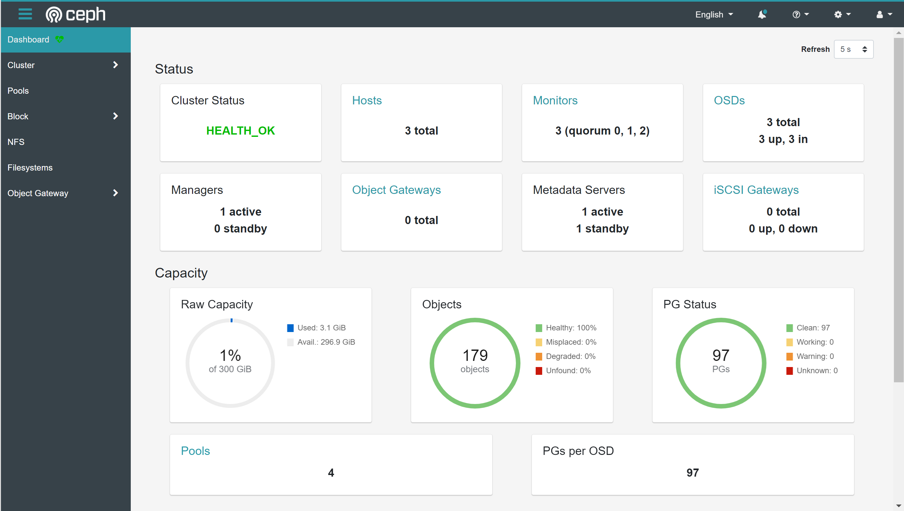
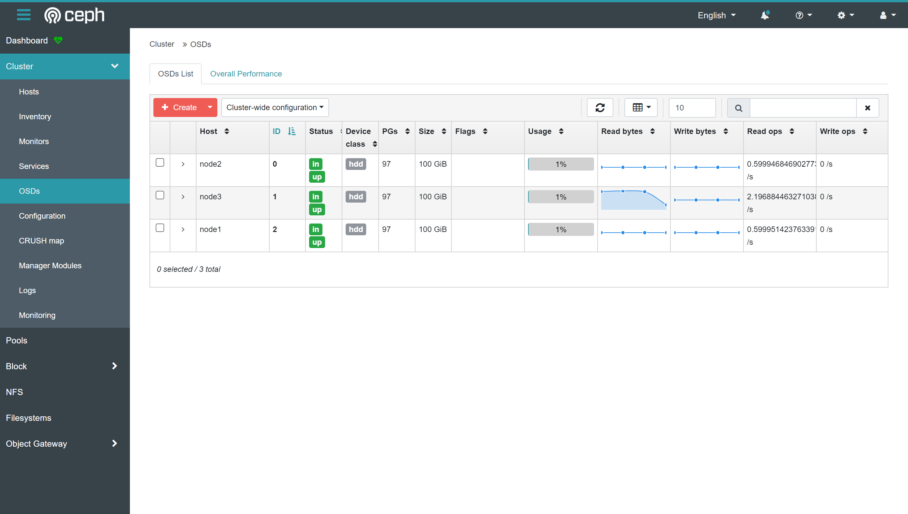
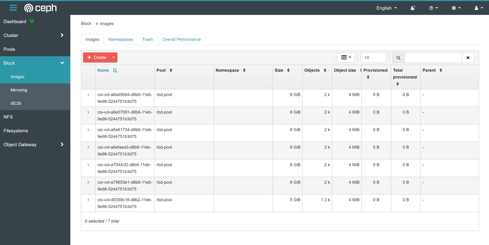

Table of Contents generated with DocToc
Rook

Rook架构设计
Rook使Ceph存储系统能够使用Kubernetes原生资源对象在Kubernetes上运行。
下图说明了Ceph Rook如何与Kubernetes集成：

通过在Kubernetes集群中运行Ceph，Kubernetes应用可以挂载Rook管理的块设备和文件系统，
或者可以使用S3/swiftapi进行对象存储。
Rook operator自动配置存储组件并监视集群，以确保存储保持可用和正常。
Rook operator是一个简单的容器，它拥有引导和监视存储集群所需的所有东西。
operator将启动和监控Ceph monitor pods, Ceph OSD守护进程提供RADOS存储，以及启动和管理其他Ceph守护进程。
operator通过初始化运行服务所需的pods和其他组件来管理池、对象存储(S3/Swift)和文件系统的crd。
operator将监视存储守护程序，以确保群集正常运行。Ceph-mons将在必要时启动或故障转移，
并随着集群的增长或收缩进行其他调整。operator还将监视api服务请求的所需状态更改，并应用更改。
Rook operator还初始化消耗存储所需的代理。Rook会自动配置Ceph CSI驱动程序，将存储装载到pod中。

rook/ceph镜像包括管理集群所需的所有工具。许多Ceph概念，如放置组和crush map是隐藏的。
Rook在物理资源、池、卷、文件系统和存储桶方面为管理员创建了一个非常简化的用户体验。同时，当需要Ceph工具时，可以应用高级配置
Rook基于golang实现。Ceph是基于C++中实现的，其中数据路径是高度优化的。二者是最好的组合。
Rook实践
Rook管理ceph-基础版
环境说明
k8s集群信息
[root@node1 ~]# kubectl get nodes
NAME STATUS ROLES AGE VERSION
node1 Ready master,worker 2d4h v1.18.6
node2 Ready master,worker 2d4h v1.18.6
node3 Ready master,worker 2d4h v1.18.6
内核版本
5.4.108-1.el7.elrepo.x86_64
磁盘设备
node1-node3各挂载一块100G磁盘，设备路径为/dev/sdb
依赖说明
要配置
Ceph存储群集，至少需要以下一个本地存储选项：
- 原始设备（没有分区或格式化文件系统）
- 原始分区（无格式化文件系统）
k8s存储类提供的块模式PV
安装
LVM包
在以下场景中，Ceph OSD依赖于LVM：
OSD是在原始设备或分区上创建的- 如果启用了加密（encryptedDevice: true）
- 指定了元数据设备
在以下情况下，OSD不需要LVM：
- 使用
storageClassDeviceSets在PVC上创建OSD
如果您的场景需要LVM，那么LVM需要在运行OSD的主机上可用。有些Linux发行版不附带lvm2包。
要运行Ceph OSDs，k8s群集中的所有存储节点上都需要此包。如果没有这个包，
即使Rook能够成功地创建Ceph OSD，当一个节点重新启动时，在重新启动的节点上运行的OSD pods将无法启动。
请使用Linux发行版的包管理器安装LVM。例如：
yum install -y lvm2
操作系统内核
RBD类型
Ceph需要一个用RBD模块构建的Linux内核。
许多Linux发行版都有这个模块，但不是所有发行版都有。例如，GKE容器优化OS（COS）没有RBD。
您可以通过运行modprobe rbd来测试Kubernetes节点
cephfs类型
如果要从Ceph共享文件系统（CephFS）创建卷，建议的最低内核版本为4.17。
如果内核版本低于4.17，则不会强制执行所请求的PVC大小。存储配额将仅在较新的内核上强制执行。
开启准入控制器
准入控制器在对象持久化之前拦截到Kubernetes API服务器的请求，但在对请求进行身份验证和授权之后。
建议启用Rook准入控制器，以提供额外级别的验证，以确保Rook是使用自定义资源(CR)设置正确配置的。
下载
ceph配置声明文件上传至k8s节点/root下,解压
tar zxvf v1.6.6.tar.gz
mv rook-1.6.6 rook
可利用助手脚本自动配置部署
Rook准入控制器,这个脚本将帮助我们完成以下任务:
- 创建自签名证书
- 为证书创建证书签名请求（
CSR），并从Kubernetes集群获得批准 - 将这些证书存储为
Kubernetes Secret - 创建
Service Account、ClusterRole和ClusterRoleBindings，以便以最低权限运行webhook服务 - 创建
ValidatingWebhookConfig并使用来自集群的适当值填充CA bundle
cd rook/
kubectl create -f cluster/examples/kubernetes/ceph/crds.yaml -f cluster/examples/kubernetes/ceph/common.yaml
离线环境下，手动下载cert-manager.yaml
上传至/root/rook/下，替换文件路径
sed -i "s#https://github.com/jetstack/cert-manager/releases/download/\$CERT_VERSION/#rook/#g" \
tests/scripts/deploy_admission_controller.sh
调整/root/rook/cert-manager.yaml文件内引用镜像tag(替换为可访问的镜像tag)
[root@node1 rook]# cat cert-manager.yaml |grep 'image:'
image: harbor.chs.neusoft.com/ceph-csi/jetstack/cert-manager-cainjector:v1.2.0
image: harbor.chs.neusoft.com/ceph-csi/jetstack/cert-manager-controller:v1.2.0
image: harbor.chs.neusoft.com/ceph-csi/jetstack/cert-manager-webhook:v1.2.0
发布
tests/scripts/deploy_admission_controller.sh
创建rook operator
调整
/root/rook/cluster/examples/kubernetes/ceph/operator.yaml文件内引用镜像tag(替换为可访问的镜像tag)
[root@node1 rook]# grep "image:" cluster/examples/kubernetes/ceph/operator.yaml
image: rook/ceph:v1.6.6
调整以下内容，并放开注释
# ROOK_CSI_CEPH_IMAGE: "quay.io/cephcsi/cephcsi:v3.3.1"
# ROOK_CSI_REGISTRAR_IMAGE: "k8s.gcr.io/sig-storage/csi-node-driver-registrar:v2.2.0"
# ROOK_CSI_RESIZER_IMAGE: "k8s.gcr.io/sig-storage/csi-resizer:v1.2.0"
# ROOK_CSI_PROVISIONER_IMAGE: "k8s.gcr.io/sig-storage/csi-provisioner:v2.2.2"
# ROOK_CSI_SNAPSHOTTER_IMAGE: "k8s.gcr.io/sig-storage/csi-snapshotter:v4.1.1"
# ROOK_CSI_ATTACHER_IMAGE: "k8s.gcr.io/sig-storage/csi-attacher:v3.2.1"
发布
kubectl apply -f cluster/examples/kubernetes/ceph/operator.yaml
查看状态
[root@node1 rook]# kubectl get pod -n rook-ceph
NAME READY STATUS RESTARTS AGE
rook-ceph-admission-controller-549f58dd9-rs8qs 1/1 Running 0 86s
rook-ceph-admission-controller-549f58dd9-tmfnr 1/1 Running 0 86s
rook-ceph-operator-869777bc74-dtv2h 1/1 Running 0 2m9s
此时，operator将自动启动准入控制器部署，而Webhook将开始拦截对Rook资源的请求。
创建ceph集群
/root/rook/cluster/examples/kubernetes/ceph/cluster.yaml
调整镜像
tag
ceph/ceph:v15.2.13
配置
ceph数据盘
修改以下配置，其他默认
storage: # cluster level storage configuration and selection
useAllNodes: true
nodes:
- name: "node1"
devices: # specific devices to use for storage can be specified for each node
- name: "sdb"
- name: "node2"
devices: # specific devices to use for storage can be specified for each node
- name: "sdb"
- name: "node3"
devices: # specific devices to use for storage can be specified for each node
- name: "sdb"
发布
kubectl apply -f /root/rook/cluster/examples/kubernetes/ceph/cluster.yaml
查看状态
查看pod
[root@node1 ceph]# kubectl get pod -n rook-ceph
NAME READY STATUS RESTARTS AGE
csi-cephfsplugin-jsw67 3/3 Running 0 55s
csi-cephfsplugin-provisioner-6667846fc9-g4jj2 6/6 Running 0 52s
csi-cephfsplugin-provisioner-6667846fc9-wmzc7 6/6 Running 0 53s
csi-cephfsplugin-tb4mh 3/3 Running 0 55s
csi-cephfsplugin-xvk4s 3/3 Running 0 55s
csi-rbdplugin-gl4tx 3/3 Running 0 57s
csi-rbdplugin-provisioner-7bf5687dcd-4rsst 6/6 Running 0 57s
csi-rbdplugin-provisioner-7bf5687dcd-7hf94 6/6 Running 0 57s
csi-rbdplugin-x57s2 3/3 Running 0 57s
csi-rbdplugin-zs64m 3/3 Running 0 57s
rook-ceph-admission-controller-549f58dd9-rs8qs 1/1 Running 0 18h
rook-ceph-admission-controller-549f58dd9-tmfnr 1/1 Running 0 18h
rook-ceph-mon-a-canary-6d7bf84b9c-pjmd4 1/1 Running 0 50s
rook-ceph-mon-b-canary-5b647bf496-pdvhj 1/1 Running 0 50s
rook-ceph-mon-c-canary-54d67bb847-8pb7x 1/1 Running 0 49s
rook-ceph-operator-869777bc74-dtv2h 1/1 Running 0 18h
查看集群状态
kubectl -n rook-ceph get CephCluster -o yaml
创建ceph工具箱
相当于ceph客户端，用于与ceph集群交互
创建发布
离线环境注意替换镜像tag(rook/ceph:v1.6.6)
cat <<EOF | kubectl apply -f -
apiVersion: apps/v1
kind: Deployment
metadata:
name: rook-ceph-tools
namespace: rook-ceph
labels:
app: rook-ceph-tools
spec:
replicas: 1
selector:
matchLabels:
app: rook-ceph-tools
template:
metadata:
labels:
app: rook-ceph-tools
spec:
dnsPolicy: ClusterFirstWithHostNet
containers:
- name: rook-ceph-tools
image: rook/ceph:v1.6.6
command: ["/tini"]
args: ["-g", "--", "/usr/local/bin/toolbox.sh"]
imagePullPolicy: IfNotPresent
env:
- name: ROOK_CEPH_USERNAME
valueFrom:
secretKeyRef:
name: rook-ceph-mon
key: ceph-username
- name: ROOK_CEPH_SECRET
valueFrom:
secretKeyRef:
name: rook-ceph-mon
key: ceph-secret
volumeMounts:
- mountPath: /etc/ceph
name: ceph-config
- name: mon-endpoint-volume
mountPath: /etc/rook
volumes:
- name: mon-endpoint-volume
configMap:
name: rook-ceph-mon-endpoints
items:
- key: data
path: mon-endpoints
- name: ceph-config
emptyDir: {}
tolerations:
- key: "node.kubernetes.io/unreachable"
operator: "Exists"
effect: "NoExecute"
tolerationSeconds: 5
EOF
测试可用性
[root@node1 ceph]# kubectl -n rook-ceph exec -it deploy/rook-ceph-tools -- bash
创建块存储
创建块存储池
cat <<EOF | kubectl apply -f -
apiVersion: ceph.rook.io/v1
kind: CephBlockPool
metadata:
name: rbd-pool
namespace: rook-ceph # namespace:cluster
spec:
failureDomain: host
replicated:
size: 3
requireSafeReplicaSize: true
parameters:
compression_mode: none
statusCheck:
mirror:
disabled: false
interval: 60s
# quota in bytes and/or objects, default value is 0 (unlimited)
# see https://docs.ceph.com/en/latest/rados/operations/pools/#set-pool-quotas
quotas:
maxSize: "50Gi" # valid suffixes include k, M, G, T, P, E, Ki, Mi, Gi, Ti, Pi, Ei
# maxObjects: 1000000000 # 1 billion objects
# A key/value list of annotations
annotations:
# key: value
EOF
创建块存储存储类
cat <<EOF | kubectl apply -f -
apiVersion: storage.k8s.io/v1
kind: StorageClass
metadata:
name: rook-ceph-block
# Change "rook-ceph" provisioner prefix to match the operator namespace if needed
provisioner: rook-ceph.rbd.csi.ceph.com
parameters:
# clusterID is the namespace where the rook cluster is running
clusterID: rook-ceph
# Ceph pool into which the RBD image shall be created
pool: rbd-pool
imageFormat: "2"
imageFeatures: layering
csi.storage.k8s.io/provisioner-secret-name: rook-csi-rbd-provisioner
csi.storage.k8s.io/provisioner-secret-namespace: rook-ceph
csi.storage.k8s.io/controller-expand-secret-name: rook-csi-rbd-provisioner
csi.storage.k8s.io/controller-expand-secret-namespace: rook-ceph
csi.storage.k8s.io/node-stage-secret-name: rook-csi-rbd-node
csi.storage.k8s.io/node-stage-secret-namespace: rook-ceph
csi.storage.k8s.io/fstype: ext4
# Delete the rbd volume when a PVC is deleted
reclaimPolicy: Delete
EOF
查看存储类
[root@node1 ceph]# kubectl get sc rook-ceph-block
NAME PROVISIONER RECLAIMPOLICY VOLUMEBINDINGMODE ALLOWVOLUMEEXPANSION AGE
rook-ceph-block rook-ceph.rbd.csi.ceph.com Delete Immediate false 3s
验证可用性
cat <<EOF | kubectl apply -f -
---
kind: PersistentVolumeClaim
apiVersion: v1
metadata:
name: ceph-block-pvc
spec:
storageClassName: rook-ceph-block
accessModes:
- ReadWriteOnce
resources:
requests:
storage: 5G
---
apiVersion: v1
kind: Pod
metadata:
name: ceph-block-pod
spec:
volumes:
- name: ceph-rbd-storage
persistentVolumeClaim:
claimName: ceph-block-pvc
containers:
- name: hello-container
image: busybox
command:
- sh
- -c
- 'while true; do echo "`date` [`hostname`] Hello from Ceph RBD PV." >> /mnt/store/greet.txt; sleep $(($RANDOM % 5 + 300)); done'
volumeMounts:
- mountPath: /mnt/store
name: ceph-rbd-storage
EOF
查看pvc状态
[root@node1 kubernetes]# kubectl get pvc
NAME STATUS VOLUME CAPACITY ACCESS MODES STORAGECLASS AGE
mysql-pv-claim Bound pvc-c1d19cfe-5028-43de-8cbd-405af96eb66c 20Gi RWO rook-ceph-block 93s
查看pod状态
[root@node1 ceph]# kubectl get pod
NAME READY STATUS RESTARTS AGE
ceph-block-pod 1/1 Running 0 13s
查看写入内容是否正确
[root@node1 ceph]# kubectl exec ceph-block-pod -- cat /mnt/store/greet.txt
Tue Jun 29 16:20:07 CST 2021 [node1] Hello from Ceph RBD PV.
创建共享存储
一个共享的文件系统支持多pod读/写，这对于可以使用共享文件系统进行集群的应用程序可能很有用。
创建文件系统
CRD
cat <<EOF | kubectl apply -f -
---
apiVersion: ceph.rook.io/v1
kind: CephFilesystem
metadata:
name: myfs
namespace: rook-ceph
spec:
metadataPool:
failureDomain: host
replicated:
size: 3
dataPools:
- failureDomain: host
replicated:
size: 3
preserveFilesystemOnDelete: true
metadataServer:
activeCount: 1
activeStandby: true
# A key/value list of annotations
annotations:
# key: value
placement:
# nodeAffinity:
# requiredDuringSchedulingIgnoredDuringExecution:
# nodeSelectorTerms:
# - matchExpressions:
# - key: role
# operator: In
# values:
# - mds-node
# tolerations:
# - key: mds-node
# operator: Exists
# podAffinity:
# podAntiAffinity:
# topologySpreadConstraints:
resources:
# limits:
# cpu: "500m"
# memory: "1024Mi"
# requests:
# cpu: "500m"
# memory: "1024Mi"
EOF
查看
ceph mds服务状态
[root@node1 ceph]# kubectl -n rook-ceph get pod -l app=rook-ceph-mds
NAME READY STATUS RESTARTS AGE
rook-ceph-mds-myfs-a-5c9d84c7f8-z4csx 1/1 Running 0 48s
rook-ceph-mds-myfs-b-5485989ff8-zl7g2 1/1 Running 0 47s
查看池
可以看到池myfs-data0（数据池）与myfs-metadata（元数据池）已自动创建
[root@node1 ceph]# kubectl -n rook-ceph exec deploy/rook-ceph-tools -- ceph df
--- RAW STORAGE ---
CLASS SIZE AVAIL USED RAW USED %RAW USED
hdd 300 GiB 297 GiB 137 MiB 3.1 GiB 1.04
TOTAL 300 GiB 297 GiB 137 MiB 3.1 GiB 1.04
--- POOLS ---
POOL ID PGS STORED OBJECTS USED %USED MAX AVAIL
device_health_metrics 1 1 0 B 0 0 B 0 94 GiB
rbd-pool 2 32 31 MiB 154 119 MiB 0.04 94 GiB
myfs-metadata 3 32 2.2 KiB 22 1.5 MiB 0 94 GiB
myfs-data0 4 32 0 B 0 0 B 0 94 GiB
创建存储类（
sc）
cat <<EOF | kubectl apply -f -
apiVersion: storage.k8s.io/v1
kind: StorageClass
metadata:
name: rook-cephfs
# Change "rook-ceph" provisioner prefix to match the operator namespace if needed
provisioner: rook-ceph.cephfs.csi.ceph.com
parameters:
# clusterID is the namespace where operator is deployed.
clusterID: rook-ceph
# CephFS filesystem name into which the volume shall be created
fsName: myfs
# Ceph pool into which the volume shall be created
# Required for provisionVolume: "true"
pool: myfs-data0
# The secrets contain Ceph admin credentials. These are generated automatically by the operator
# in the same namespace as the cluster.
csi.storage.k8s.io/provisioner-secret-name: rook-csi-cephfs-provisioner
csi.storage.k8s.io/provisioner-secret-namespace: rook-ceph
csi.storage.k8s.io/controller-expand-secret-name: rook-csi-cephfs-provisioner
csi.storage.k8s.io/controller-expand-secret-namespace: rook-ceph
csi.storage.k8s.io/node-stage-secret-name: rook-csi-cephfs-node
csi.storage.k8s.io/node-stage-secret-namespace: rook-ceph
reclaimPolicy: Delete
EOF
查看已有存储类
[root@node1 ceph]# kubectl get sc
NAME PROVISIONER RECLAIMPOLICY VOLUMEBINDINGMODE ALLOWVOLUMEEXPANSION AGE
openebs-hostpath (default) openebs.io/local Delete WaitForFirstConsumer false 3d4h
rook-ceph-block rook-ceph.rbd.csi.ceph.com Delete Immediate false 3h39m
rook-cephfs rook-ceph.cephfs.csi.ceph.com Delete Immediate false 4s
测试可用性
离线环境注意替换镜像tag
cat > kube-registry.yaml <<EOF
apiVersion: v1
kind: PersistentVolumeClaim
metadata:
name: cephfs-pvc
namespace: kube-system
spec:
accessModes:
- ReadWriteMany
resources:
requests:
storage: 1Gi
storageClassName: rook-cephfs
---
apiVersion: apps/v1
kind: Deployment
metadata:
name: kube-registry
namespace: kube-system
labels:
k8s-app: kube-registry
kubernetes.io/cluster-service: "true"
spec:
replicas: 3
selector:
matchLabels:
k8s-app: kube-registry
template:
metadata:
labels:
k8s-app: kube-registry
kubernetes.io/cluster-service: "true"
spec:
containers:
- name: registry
image: registry:2
imagePullPolicy: Always
resources:
limits:
cpu: 100m
memory: 100Mi
env:
# Configuration reference: https://docs.docker.com/registry/configuration/
- name: REGISTRY_HTTP_ADDR
value: :5000
- name: REGISTRY_HTTP_SECRET
value: "Ple4seCh4ngeThisN0tAVerySecretV4lue"
- name: REGISTRY_STORAGE_FILESYSTEM_ROOTDIRECTORY
value: /var/lib/registry
volumeMounts:
- name: image-store
mountPath: /var/lib/registry
ports:
- containerPort: 5000
name: registry
protocol: TCP
livenessProbe:
httpGet:
path: /
port: registry
readinessProbe:
httpGet:
path: /
port: registry
volumes:
- name: image-store
persistentVolumeClaim:
claimName: cephfs-pvc
readOnly: false
EOF
发布
kubectl apply -f kube-registry.yaml
查看运行状态
[root@node1 ceph]# kubectl get pod -A|grep regi
kube-system kube-registry-64f97cd5d6-f6hfz 1/1 Running 0 7m20s
kube-system kube-registry-64f97cd5d6-l5h5m 1/1 Running 0 7m20s
kube-system kube-registry-64f97cd5d6-nrvkc 1/1 Running 0 7m20s
开启控制面板
安装上述步骤搭建ceph集群，自带dashboard
查看服务信息
[root@node1 ceph]# kubectl -n rook-ceph get service
NAME TYPE CLUSTER-IP EXTERNAL-IP PORT(S) AGE
csi-cephfsplugin-metrics ClusterIP 10.233.41.137 <none> 8080/TCP,8081/TCP 80m
csi-rbdplugin-metrics ClusterIP 10.233.53.251 <none> 8080/TCP,8081/TCP 80m
rook-ceph-admission-controller ClusterIP 10.233.18.242 <none> 443/TCP 19h
rook-ceph-mgr ClusterIP 10.233.32.164 <none> 9283/TCP 77m
rook-ceph-mgr-dashboard ClusterIP 10.233.38.102 <none> 8443/TCP 77m
rook-ceph-mon-a ClusterIP 10.233.35.191 <none> 6789/TCP,3300/TCP 79m
rook-ceph-mon-b ClusterIP 10.233.39.246 <none> 6789/TCP,3300/TCP 78m
rook-ceph-mon-c ClusterIP 10.233.30.204 <none> 6789/TCP,3300/TCP 78m
创建
NodePort类型服务
cat > /root/rook/cluster/examples/kubernetes/ceph/dashboard-external-https.yaml <<EOF
---
apiVersion: v1
kind: Service
metadata:
name: rook-ceph-mgr-dashboard-external-https
namespace: rook-ceph
labels:
app: rook-ceph-mgr
rook_cluster: rook-ceph
spec:
ports:
- name: dashboard
port: 8443
protocol: TCP
targetPort: 8443
selector:
app: rook-ceph-mgr
rook_cluster: rook-ceph
sessionAffinity: None
type: NodePort
EOF
发布
kubectl apply -f /root/rook/cluster/examples/kubernetes/ceph/dashboard-external-https.yaml
获取登录信息
登录地址（http://节点IP:32445）
[root@node1 ceph]# kubectl get svc rook-ceph-mgr-dashboard-external-https -n rook-ceph
NAME TYPE CLUSTER-IP EXTERNAL-IP PORT(S) AGE
rook-ceph-mgr-dashboard-external-https NodePort 10.233.39.95 <none> 8443:32445/TCP 21s
登录口令
kubectl -n rook-ceph get secret rook-ceph-dashboard-password -o jsonpath="{['data']['password']}" | base64 --decode && echo
查看控制面板
主页包含集群状态、存储容量、存储池等

存储池信息

存储osd信息

块存储信息

文件系统信息

经过上述实践，我们发现在现有k8s集群搭建一套ceph存储只要满足以下两点即可：
- 内核高于
4.17 - 未被格式化分区的存储设备
整个部署流程对比非容器化部署更容易上手，利用k8s天生优势，保证了存储服务的高可用性。